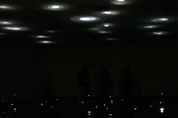
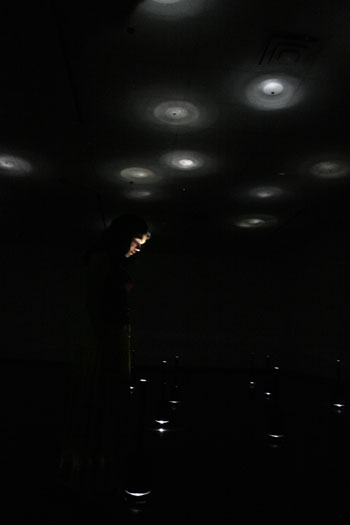
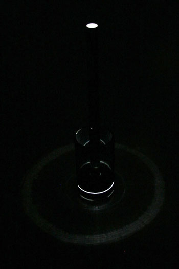
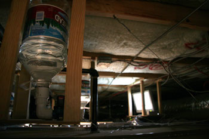
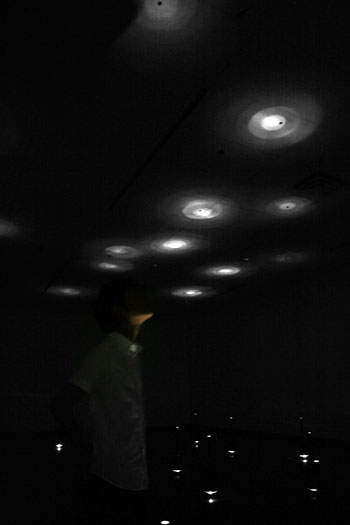
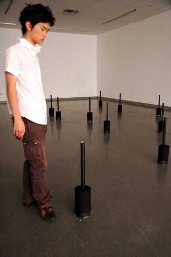
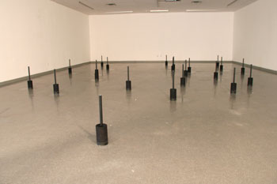
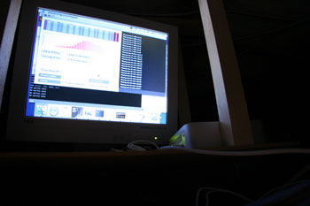
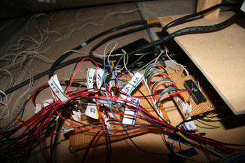

aqueous
MFA thesis installation
|
aqueous is a meditative space that encourages perception of small things.
On entering the installation, one initially sees faint lights but as the eyes adjust to the darkness, glows of light on the ceiling and watery sounds gradually become noticable. The installation presents itself differently depending on amount of the time spent in it as well as number of people present. Water droplets fall from the ceiling through the installation space into 25 water-filled tubes that are approximately tuned in an equal-temperament scale spanning two octaves. Each tube sits inside a water vessel to collect excess water and is lit from the bottom by an LED, creating a glow of light in the ceiling that shimmers and flickers when the water surface is distorted. The release of droplets is hidden above the ceiling, allowing the ceiling to act as a canvas. The actuation of the droplets is controlled by a computer program, whose algorithm constructs note sequences that resemble noise at times and music at other times. The installation is imbued with musicality through the use of rhythmic and tonal structure. But because of the physics of the installation, the volume and timbre of each drop vary since the droplets do not always fall in the same exact location. Perturbations during droplet formation, atmospheric disturbances and water surface conditions inside the tube all affect the nature of the resultant sound. The chance occurrence in aqueous is a combination of computed randomness and nature. |

aqueous
|
Photos
|

Light emit from water-filled tubes

One lit tube

Computer and actuators in the ceiling
|

Creating a glow on the ceiling

Size of a tube

Lights on: Revealing the tubes
|
Installation Setup
|
The installation is centrally-controlled by a computer running a
Processing applet.
At the heart of the algorithm is a single variable that determines
whether the installation will seem more noise-like or music-like.
This noise coefficient is nominally in the noise range, but occasionally
surges towards more coherence, allowing the visitors to catch glimpses
of musicality. The program follows a basic twelve-tone scale system
to construct the sequence of notes. Each note is usually determined
independently, only taking into account the previous note played
as the program chooses a random note from a set of permissible notes.
There are also musical, rhythmical and spatial patterns built
into the program that are occasionally activated to provide patterns
that are unlikely or impossible for the algorithm to generate by itself.
|

Computer running Processing
|
|
Above each tube hidden in a false-ceiling is a one-gallon water reservoir
(approx. 24 hours supply) connected to a solenoid valve. When a droplet is
needed, the solenoid valves open long enough for a droplet to form.
|

Reservoir and valve unit
|
|
A micro-controller circuit acts as a mediator between
the computer and the water valves.
|

Circuitry
|
|
The complete technical diagram of the installation is shown
on the right.
|
{kind=link}
Acknowledgements
My thesis committee consisting of Casey Reas,
Erkki Huhtamo, Christian Moeller, Ed Osborn and Victoria Vesna.
Jillian Wallis for installation help.
Bryan Tysinger for sound recording.
Jillian Wallis for installation help.
Bryan Tysinger for sound recording.